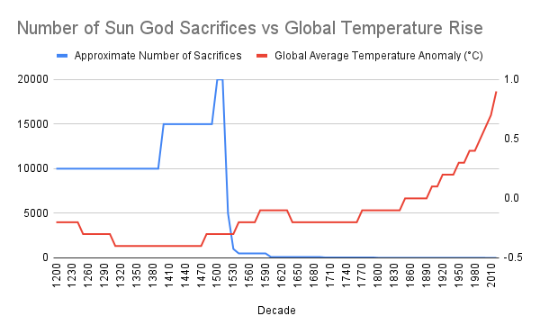

The Theory
Could there be a connection between ancient sacrifices to sun gods and the modern phenomenon of global warming? Some believe that the rituals of the past have lingering effects on our climate today. This page delves into the speculative link between these two seemingly unrelated topics.
The Evidence

This graph definitively illustrates the correlation between the number of sacrifices made to sun gods and the rise in global temperatures.
Learn More
Interested in more unconventional truths and satirical insights? Visit our homepage to explore other intriguing topics.
Sources
Sacrifices Data:
Hassig, R. (2003). "Aztec Warfare: Imperial Expansion and Political Control." University of Oklahoma Press.
Silverblatt, I. (1987). "Moon, Sun, and Witches: Gender Ideologies and Class in Inca and Colonial Peru." Princeton University Press.
Clendinnen, I. (1991). "Aztecs: An Interpretation." Cambridge University Press.
Staller, J. E., & Stross, B. (2003). "Lightning in the Andes and Mesoamerica: Pre-Columbian, Colonial, and Contemporary Perspectives." Oxford University Press.
Global Warming Indicators:
Intergovernmental Panel on Climate Change (IPCC) Assessment Reports.
National Aeronautics and Space Administration (NASA) Global Climate Change: Vital Signs of the Planet.
National Oceanic and Atmospheric Administration (NOAA) Climate Change: Global Temperature.
Church, J. A., & White, N. J. (2011). "Sea-Level Rise from the Late 19th to the Early 21st Century." Surveys in Geophysics, 32(4-5), 585-602.
PAGES 2k Consortium (2013). "Continental-scale temperature variability during the past two millennia." Nature Geoscience, 6, 339-346.